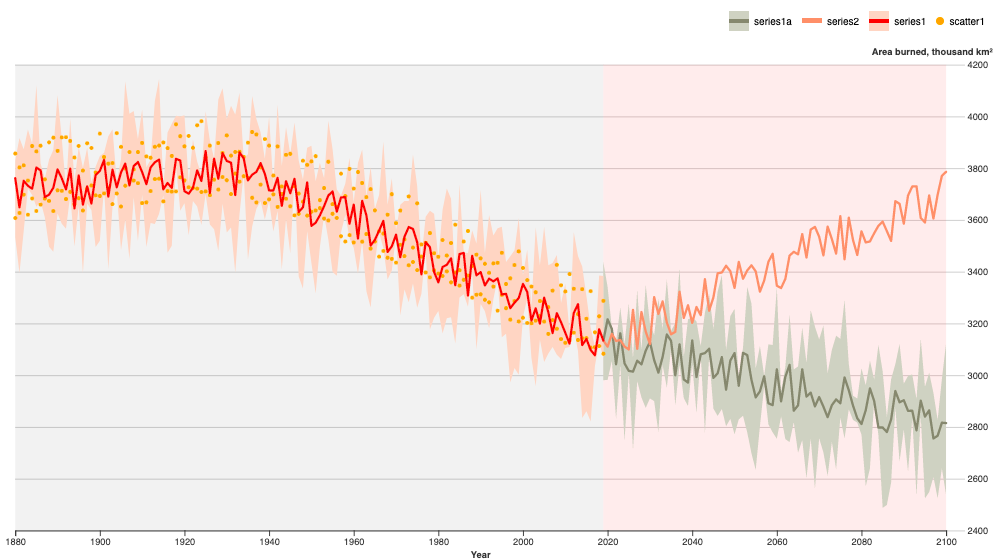

A set of data visualizations in D3.js
Created by Shreshth Mohan (shreshthmohan@hey.com)
Most of these chart were recreated and heavily inspired from existing charts by Mike Bostock (NYT/Observable) and Economist's A year in Graphic Detail 2018 & 2019
Force simulation with a split action by category.
Calendar: Stacked bar charts spread across a calendar with a
legend toggle interaction.
Chord or Uber chart with with links having an arrow-like point
A Choropleth of US Counties colored with data
A side-by-side comparision bar chart

A chart with line, band and scatter all-in-one

A scatter-like chart with a custom shape (mace: ball on a stick)
A playable animated bubble chart

Force simulation with bubbles arranged in a packed circle
A ridgeline or joy plot
A sankey chart with search for nodes and hover on links, nodes